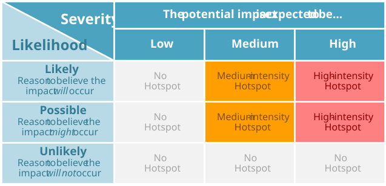

BE23: Financial Assets
Financial assets safeguard the pursuit of future-fitness
1. Ambition
A Future-Fit Business implements investment policies and related internal controls that continuously seek to improve the future-fitness of both the financial assets it owns, and any that it manages or controls on behalf of third-party asset owners.
1.1 What this goal means
Many companies own or control financial assets (equity investments, debt instruments, cash deposits with banks, etc.) as part of their core business, as a strategic business objective or simply as a method of utilizing spare cash until it is needed for other purposes. Purchasing and trading financial assets supplies capital for the investee to continue – or expand – its activities.209 Any positive or negative outcomes caused by the investee may be sustained or increased by the capital provided, and so the investor is mutually accountable for them.210
This goal requires a company to implement internal controls that help it to continuously maximize the future-fitness of its investments, with a particular emphasis on anticipating, avoiding and addressing issue-specific hotspots.
To be Future-Fit, a company must: (a) have policies and internal controls in place that enable it and its employees to anticipate where negative investment impacts are likely to occur; (b) avoid them where possible; and (c) take measurable steps to address concerns that arise.
1.2 Why this goal is needed
As with all Future-Fit Break-Even Goals, a company must reach this goal to ensure that it is doing nothing to undermine society’s progress toward an environmentally restorative, socially just, and economically inclusive future. To find out more about how these goals were derived based on 30+ years of systems science, see the Methodology Guide.
These statistics help to illustrate why it is critical for all companies to reach this goal:
Between 60-80% of coal, oil and gas reserves of publicly listed companies are ‘un-burnable’ if the world is to have a chance of not exceeding global warming of 2°C. Company valuations do not typically inform investors about their exposure to these so-called “stranded assets”, despite these reserves supporting share value of $4 trillion in 2012. [25]
There is substantial and continual growth in both the demand for Sustainable and Responsible Investment (SRI) opportunities, and in the availability of information reported on extra-financial performance. According to Eurosif’s 2018 European SRI study, Environmental, Social and Governance (ESG) integration strategies grew by 60% over the previous two years to represent more than €4 trillion of assets under management. [150]
Major investment is needed to meet the SDGs. While some initiatives should be publicly funded, success will also require significant investment of private funds from individual and corporate investors. The United Nations Conference on Trade and Development estimates there is an annual investment gap in developing countries of over $4 trillion. [151]
1.3 How this goal contributes to the SDGs
The UN Sustainable Development Goals (SDGs) are a collective response to the world’s greatest systemic challenges, so they are naturally interconnected. Any given action may impact some SDGs directly, and others via knock-on effects. A Future-Fit Business can be sure that it is helping - and in no way hindering - progress towards the SDGs.
Companies may help to drive progress with respect to all SDGs by ensuring that the financial assets they control do not hinder the pursuit of future-fitness. The most direct links with respect to this goal, however, will depend on the unique characteristics of each company’s investments.
2. Action
2.1 Getting started
Background information
As explained in the Methodology Guide, every company is mutually accountable for any impact beyond its own four walls, to the extent that the impact is a consequence of the company’s existence.
In terms of investment, this means not investing in financial assets which themselves hinder society’s progress toward future-fitness.211 This goal covers three ownership scenarios:
- Financial assets owned by the company.
- Financial assets managed by the company on behalf of third-party owners.
- Financial assets offered as products to third-parties without any involvement in the management of the investment itself.
When a company invests in a financial asset – either on its own behalf or for a third-party owner – or offers the investment as a product to third-parties, it effectively chooses to provide (part of the) financing for the negative impacts associated with that asset. Companies are therefore mutually accountable for the negative impacts of that investment.
Understanding the impact of any individual company or project – and therefore any associated financial asset – is complex, and a company may not even know exactly where and how its money is being deployed. However, if companies do not work to understand the impacts of their financial decisions, they risk contributing to negative outcomes.
That said, growing demand for information on the environmental and social impacts of investments is leading to greater transparency and availability of information. Full integration of future-fitness data into the company’s approach to financial assets should therefore be a long-term aspiration.
Questions to ask
These questions should help you identify what information to gather.
Are financial assets part of the company’s core business?
- Does the company manage financial assets on its own behalf, or for other organizations or individuals? Does it sell financial assets as products? Does it supply other organizations or individuals with loans? How much insight does the company have into where its financial assets are invested?
- Does the company pay into a pension fund on behalf of its employees? Does it have any insight into how the money in that fund is invested, and the degree to which that fund’s investment strategy aligns with the company’s own values?
What are the company’s investment goals?
- When investing capital in financial assets, what are the company’s primary objectives? Is it looking to maximize financial returns, minimize risk or preserve liquidity?
- Does the company have explicit social or environmental objectives with respect to its financial assets?
- Does the company have a stated commitment to support the SDGs? If so, has this commitment been integrated into the company’s investment criteria?
How does the company manage its financial assets?
- Does the company have explicit policies and internal controls relating to financial assets? Are these actively and regularly reviewed? Who are the individuals responsible for overseeing and ensuring their effectiveness? Have social and environmental criteria been integrated into them?
- Are the company’s own investments, or those of its clients, managed by a third-party? If so, what are the investment parameters communicated to the managers of these assets, and do they include specific social or environmental objectives? Do the existing managers report on any extra-financial elements of their investments? How are the managers evaluated on - and rewarded for - their performance?
- How does the company treat voting rights? Does it participate in shareholder discussions, or have someone represent its interests? Has the company formally documented its objectives in this regard? Do any managers exercise ownership and voting rights on behalf of the company in line with Future-Fit objectives?
How to prioritize
These questions should help you identify and prioritize actions for improvement.
Where could the company have most impact with its financial assets?
- In which types of financial assets does the company have the largest amounts of capital invested? Small changes to the way these assets are managed could have relatively large impacts.
Which potential improvements would be the easiest to implement?
- For which asset types or pools of capital would it be easiest to begin integrating Future-Fit objectives? Which risk profiles or stated investment objectives most closely align with Future-Fit requirements?
- Are there opportunities to transition to instruments with similar risk profiles and growth potential that also incorporate social or environmental considerations?
Could the company find ways to exceed the requirements of this goal?
- Beyond what is required to reach this goal, is the company able to do anything to ensure that social norms, global governance and economic growth drive the pursuit of future-fitness?212 Any such activity can speed up society’s progress to future-fitness. For further details see the Positive Pursuit Guide.
The next section describes the fitness criteria needed to tell whether a specific action will result in progress toward future-fitness.
2.2 Pursuing future-fitness
Introduction
To be Future-Fit, a company must have internal controls in place that enable it and its employees to evaluate financial assets in order to identify any potential negative impacts. Furthermore, policies must be implemented to avoid those impacts where possible, and steps must be taken to address any that cannot be avoided.
Guidance on performing hotspot assessments
To anticipate the negative impacts that its investments could be contributing to - however unintentionally - all investments should be subject to hotspot assessments, to identify any activity that may undermine progress toward the 8 Properties of a Future-Fit Society, namely:213
- Energy is renewable and available to all;
- Water is responsibly sourced and available to all;
- Natural resources are managed to safeguard communities, animals and ecosystems;
- The environment is free from pollution;
- Waste does not exist;
- Our physical presence protects the health of ecosystems and communities;
- People have the capacity and opportunity to lead fulfilling lives; and
- Social norms, global governance and economic growth drive the pursuit of future‑fitness.
Figure 1 offers a list of common issues to consider in each area. Particular scrutiny should be given to types of impact whose likelihood is higher depending on industry-specific, geographical, and resource-specific risks. For example, do the assets support finance to:
- Projects that use a highly water-intensive agricultural manufacturing process occurring in a water-stressed region?
- Companies that outsource 24-hour customer services functions to countries with limited regulatory protection for employee rights?
- Funds investing in resources like wood pulp or palm oil, which may contribute to deforestation if purchased from uncertified sources?
Resources for hotspot assessments
Companies should use information available from government and industry bodies, as well as their own desk research. For physical products, Life-Cycle Assessment (LCA) databases can prove useful. For social impacts, the Social Hotspot Database is a good starting point, as is OpenLCA for environmental impacts.
Assessments for financial assets owned by the company:
For all financial assets it owns, the company should seek to:
- Identify exactly how its capital has been deployed (e.g. through bank deposits, direct investments, funds, etc.);
- Determine the end recipients of each investment (e.g. the constituent companies within a fund); and,
- Consider which negative impacts might be reasonably expected to occur as a result of those investments.
Note that many investment vehicles are opaque with regard to where they invest. However, without this information asset owners cannot be sure that they are not contributing to negative impacts.
Figure 1: A list of common hotspot issues by area of impact.
| Issue area | Common hotspots |
|---|---|
| Energy | Energy-intensive processes which are likely to: - Rely on non-renewable energy - Prevent others from meeting energy needs |
| Water | Water-intensive processes which are likely to: - Rely on water from water-stressed sources - Prevent others from meeting water needs |
| Natural resources | Reliance on natural resources, whose sourcing contributes to the following: - Loss of biodiversity - Depletion of renewable resources - Armed conflicts - Poor treatment of animals - Physical degradation of the environment - Diversion of agricultural crops to energy feedstock |
| Pollution: GHGs | GHG-intensive processes |
| Pollution: Other harmful emissions | Harmful emissions into air, land and water, including: - Gaseous toxins and air pollutants (e.g. VOCs, NOx) - Ozone depleting substances - Substances that build up in nature - Scarce metals (e.g. Cadmium and lead) - Untreated or insufficiently treated wastewater - Harmful chemicals (e.g. fertilizer run-off, harmful pesticides) |
| Waste | Processes which result in large amounts of waste generation |
| Physical presence | Harmful uses of land, including: - Encroachment into areas of importance to local communities - Conversion of pristine ecosystems (e.g. conversion of primary forests and wetlands) - Lack of respect for community rights (e.g. land-grabbing practices) |
| People | Poor labor practices, including: - Child Labor - Excessive overtime - Forced Labor - Hazardous working conditions - Irresponsible use of agency labor - Underpayment or non-payment of wages and benefits - Undisclosed subcontracting - Discriminatory practices - Lack of representation (e.g. the right to bargain collectively) |
| Drivers | Operational activities which are driven by unethical business conduct (e.g. bribery practices) |
Assessments for financial assets managed by the company on behalf of others:
For all financial assets it manages, the company should seek to:
- Determine the end recipients of each investment (e.g. the constituent companies within a fund); and,
- Consider which negative impacts might be reasonably expected to occur as a result of those investments.
Assessments for financial assets offered as products:
For all financial assets offered as products, the company should seek to:
- Identify exactly how the capital has been deployed within each product;
- Determine the end recipients of each underlying investment (e.g. the constituent companies within a fund); and,
- Consider which negative impacts might be reasonably expected to occur as a result of those investments.
Guidance on how to categorize hotspots
To prioritize action with respect to each hotspot, a company should look at both the likelihood of a negative impact occurring, and the severity of the consequences if it does occur. Any impact of medium to high severity should be considered a hotspot unless there is good reason to believe that the impact will not occur (see Figure 2).
Figure 2: Guidance on identifying hotspot intensity, by considering both likelihood and severity. Issues toward the top right of the matrix deserve the most attention.214

Guidance on how to address hotspots
A company must ensure it is effective in generating meaningful action to avoid and address hotspots. This requires the adoption of a No use, No excuse, Commitment to reduce approach, as follows:
No use…
Companies must commit to screening, avoiding, and where possible divesting current holdings in, any financial assets where the core business model of the investee depends on, or is inextricably linked to, propagating outcomes that intrinsically undermine society’s progress toward future-fitness. This mean products or services where a likely, foreseeable and ongoing consequence of the core business model would be to cause or prolong a breach to one or more system conditions215 - and which no amount of product / service redesign or engagement activity can prevent.
Examples include:
- Financial assets whose core business model depends on or is inseparable from the physical degradation of the environment (e.g. companies engaged in open-cast mining, fisheries using bottom-trawling nets).
- Financial assets whose core business model depends on or is inseparable from pollution of the environment (e.g. coal-fired power stations).
- Financial assets whose core business model depends on or is inseparable from harming people (e.g. manufacturers of landmines, cigarette producers).
Companies should also set up conditional screening criteria around topics that are known to be particularly problematic (e.g. palm oil, whose production is often linked to deforestation), and only invest where those problems are being addressed (e.g. RSPO-certified palm oil216). [152]
No excuse…
Challenges in obtaining information on investments do not excuse the company from its mutual accountability for the fitness implications of those investments. When an assessment of an investee’s fitness is theoretically possible to complete, this step must be taken even if it is difficult. Examples include:
- Where managers buy and sell financial assets as opportunities arise, meaning that the company would need to assess numerous transactions on a regular basis to understand its fitness.
- High-frequency trading strategies – especially algorithmic or fully automated ones – which trade multiple assets based on statistical data, irrespective of the nature of the underlying businesses, making it extremely difficult to create an accurate picture of which investees an investor is effectively financing at any point in time.
- Investment in a privately held company which refuses to give fitness information to its shareholders.
While companies can reasonably anticipate the use of capital when investing in businesses or project-based financing, characteristics of some other types of financial asset mean that companies are not in a position to assess the fitness of their investments. For example, personal loans such as lines of credit, overdrafts, payday loans, credit cards or mortgages extended to an individual borrower typically have no reporting requirements, and information on the use of this capital is often appropriately protected by consumer privacy laws. In these cases, companies are not considered mutually accountable for the fitness of these financial assets.
Commitment to reduce…
When a non-compliant investment has been identified, and substitution is not immediately possible (e.g. due to market illiquidity, or the investor being in the midst of a multi-year Limited Partnership commitment), the company must seek to reduce its impact through other means. This may include:
- Engaging with the manager or underlying investee - either directly or through specialist service providers - to encourage greater alignment with Future-Fit requirements.
- Ensuring that any income or returned capital is not reinvested in the same non-compliant investee.
Additionally, where alternative financial assets exist that are more aligned with the pursuit of future-fitness and offer the required financial risk-reward profile, companies should seek to transition to these. Examples include:
- Investing in a green bond fund, as opposed to a conventional bond fund.
- Investing in an ethically-screened or low-carbon equity tracker fund, as opposed to a conventional index tracker fund.
- Investing in an active, sustainability-focused thematic listed equity fund, as opposed to an active sector-focused listed equity fund.
- Investing in a private equity fund that supports emerging clean energy technologies, as opposed to an unconstrained private equity fund.
Fitness criteria
The company must ensure that all hotspots are identified and managed consistently and in a way that is aligned with the No use, No excuse, Commitment to reduce approach described above.
In addition, each financial asset owned, managed or offered as a product by the company, must be subject to screening processes and efforts to improve fitness outcomes, as described below.
- The company must perform a hotspot assessment applicable to each financial asset which achieves the following:
- When a hotspot has been identified, it must be addressed through actions in line with the No use, No excuse, Commitment to reduce approach.
How often should hotspot assessments be performed?
Given sufficient time, a company should succeed in eliminating the most intense hotspots from its investments, but this is no cause for complacency. Investing is a dynamic activity, so new problems might appear periodically, and less‑problematic impacts must still be addressed. Because of this, hotspot assessments should be seen as an iterative and ongoing process.
Practically, hotspot assessments should be reviewed and updated on an appropriate periodic basis, or if the provenance of specific investments changes substantially.
3. Assessment
3.1 Progress indicators
The role of Future-Fit progress indicators is to reflect how far a company is on its journey toward reaching a specific goal. Progress indicators are expressed as simple percentages.
A company should always seek to assess its future-fitness across the full extent of its activities. In some circumstances this may not be possible. In such cases see the section Assessing and reporting with incomplete data in the Implementation Guide.
Assessing progress
This goal has nine progress indicators, corresponding to the specific issue areas identified in Figure 2, namely: Energy, Water, Natural resources, GHG emissions, Harmful emissions, Waste, Physical presence, People, and Drivers. To calculate progress, the following steps are required:
For each of the nine issue areas:
- Assess the fitness of each financial asset held at any point throughout the reporting period, according to the guidance below.
- Determine how many days each asset was held for during the reporting period.
- Calculate progress as the time-and-value-weighted sum of the fitness scores of all financial assets.
Assessing the fitness of a financial asset
The company must assess each financial asset as described in Figure 3.
Figure 3: How to assess the fitness of financial assets.
| Fitness Score | Fitness Criteria |
|---|---|
| 0% | - No hotspot assessment has been performed or - The financial asset falls into the No use category of the No use, No excuse, Commitment to reduce approach |
| 25% | - An appropriate hotspot assessment has been undertaken - The assessment identifies that potential hotspots may exist - No further action has been taken Note: if analysis confirms there are no potential hotspots, check criteria to score 100% (below) |
| 50% | - A detailed analysis of all potential hotspots has been undertaken - The analysis confirms that actual hotspots do exist - Steps are being taken to address identified hotspots Note: if analysis confirms there are no actual hotspots, check criteria to score 100% (below) |
| 75% | - All high-intensity hotspots have been addressed - Company is taking appropriate steps toward addressing remaining hotspots, in line with the No use, No excuse, Commitment to reduce approach |
| 100% | - All hotspots have been avoided or eliminated |
Calculating company progress for a specific issue area
The company’s aggregate Future-Fit progress with respect to issue area “X” (for each issue area shown in Figure 2) is the time-and-value-weighted sum of the future-fitness scores of all financial assets.
This can be expressed mathematically as:
\[F^X=\frac{\sum_{i=1}^If_i^X*C_i*D_i}{\sum_{i=1}^IC_i*D_i}\] Where:
| \[F^{X}\] | Is the progress toward future-fitness for issue area X, expressed as a percentage. |
| \[X\] | Is the issue area: Energy, Water, Natural resources, GHG emissions, Harmful emissions, Waste, Physical presence, People, or Drivers. |
| \[f_{i}^{X}\] | Is the fitness of financial asset i. |
| \[C_{i}\] | Is the monetary value of financial asset i.217 |
| \[D_{i}\] | Is the number of days that financial asset i was held during the reporting period. |
| \[I\] | Is the total number of financial assets in the company’s portfolio. |
For an example of how this progress indicator can be calculated, see here.
3.2 Context indicators
The role of the context indicators is to provide stakeholders with the additional information needed to interpret the full extent of a company’s progress.
Total Assets Under Management
The company must report the total value of assets under management held, controlled and/or offered during the reporting period.218
Challenging hotspots
A brief description of any high-intensity hotspots that have not been fully addressed within the reporting period, and for each:
- A short description of the hotspot.
- Actions taken to date to avoid or address hotspot.
- If applicable, additional actions planned.
For an example of how context indicators can be reported, see here.
4. Assurance
4.1 What assurance is for and why it matters
Any company pursuing future-fitness will instil more confidence among its key stakeholders (from its CEO and CFO to external investors) if it can demonstrate the quality of its Future-Fit data, and the robustness of the controls which underpin it.
This is particularly important if a company wishes to report publicly on its progress toward future-fitness, as some companies may require independent assurance before public disclosure. By having effective, well-documented controls in place, a company can help independent assurers to quickly understand how the business functions, aiding their ability to provide assurance and/or recommend improvements.
4.2 Recommendations for this goal
The following points highlight areas for attention with regard to this specific goal. Each company and reporting period is unique, so assurance engagements always vary: in any given situation, assurers may seek to evaluate different controls and documented evidence. Users should therefore see these recommendations as an illustrative list of what may be requested, rather than an exhaustive list of what will be required.
- Document the methods and frequency through which the company assesses its investments. This can help assurers to assess whether the company’s approach is likely to be sufficient for identifying all hotspots.
- Document the method used to determine whether financial assets are aligned with the No use, No Excuse, Commitment to reduce approach. This can help assurers to assess whether the company’s approach is in line with the requirements of this goal.
- In cases where the company has decided to continue holding financial assets categorized as having a high-intensity hotspot, document the methods used by the company to engage with the manager of the financial asset it has invested in, or the underlying investee itself, to encourage them to increase their fitness over time. This can help assurers to verify that the approach taken by the company is in line with the requirements of the goal.
- Retain any working notes or information used for the calculation of the progress indicator, including support for the evaluation of individual financial assets, or groups of assets where appropriate, as well as evidence of asset value and time held during the reporting period for the weighting calculation. Assurers may use this information to verify the accuracy of the calculated indicator.
For a more general explanation of how to design and document internal controls, see the section Pursuing future-fitness in a systematic way in the Implementation Guide.
5. Additional information
5.1 Example
ACME Inc. sells lemonade products, and has accumulated a significant amount of financial reserves which it has invested in different types of financial assets.
ACME decides to do an initial assessment to identify potential greenhouse gas emissions hotspots across its financial assets.
ACME Inc. had $100,000 on deposit with Ethical Bank at the start of the reporting period. Ethical Bank has extensive controls in place to ensure that it only lends to businesses that are actively aligned with the pursuit of future-fitness. These controls have effectively screened out significant greenhouse gas emitters, and so since no hotspots exists, the deposit is considered 100% fit.
Halfway through the period, the company receives $50,000 and decides to invest it in an index-tracking equity fund. The fund manager states that it has reviewed the companies within the fund and identified a number of potential issues, but is not doing anything about these. The fund is therefore considered 25% fit.
Progress indicators
The company can now calculate its progress as:
\[F^{GHGs}=\frac{\sum_{i=1}^If_i^{GHGs}*C_i*D_i}{\sum_{i=1}^IC_i*D_i}\]
\[=\frac{100\%*100,000*365+25\%*50,000*182}{100,000*365+50,000*182}\approx85\%\]
\[F^{Energy}=F^{Water}=F^{N.resources}=F^{Harmful-emissions}=F^{Waste}=F^{Presence}\]
\[=F^{People}=F^{Drivers}=0\%\]
Context indicators
Total Assets Under Management during the period: $150,000.
Challenging hotspots: Several high-intensity hotspots were identified:
- Exposure to several oil and gas producing companies.
- Exposure to a cement producer.
Steps taken: No actions taken.
5.3 Useful links
The Principles for Responsible Investment (PRI)
In 2005, the UN assembled the PRI as a group of the world’s largest institutional investors to develop a set of Principles for Responsible Investment. The group believes that an economically efficient, sustainable financial system is a necessity for long-term value creation. The six Principles outlined by the group are a voluntary, aspirational set of investment guidelines that offer a broad range of possible actions for the inclusion of environmental, social and governance (ESG) factors into investment practice. The Principles were developed for investors, by investors, in the hope of developing a more sustainable global financial system. As of April 2018, there are more than 1,950 signatories from over 50 countries, representing over US$80 trillion in assets under management.
United Nations Environment Programme – Finance Initiative (UNEP FI)
UNEP FI is a partnership between United Nations Environment Programme and the global financial sector created in the context of the 1992 Earth Summit with a mission to promote sustainable finance. Over 200 financial institutions, including banks, insurers and investors, work with UNEP to understand today’s environmental challenges, why they matter to finance, and how to actively participate in addressing them.
UNEP FI has conducted research, and subsequently published its findings, on the debate about whether fiduciary duty is a legitimate barrier to investors integrating environmental, social and governance issues into their investment processes. The report, available here, is useful to inform conversations on the way fiduciary duty and the pursuit of future-fitness interact.
Divest-Invest
Divest-Invest is a diverse, global network of individuals and organizations united in the belief that by using their collective influence as investors to divest from fossil fuels, and invest in climate solutions, they can accelerate the transition to a zero-carbon economy. In this way, they are supporting the agreement made by governments in Paris at COP21 and protecting their own investment returns. As of January 2019, the movement has catalysed $7.2 trillion of commitments.
Triodos Bank
Triodos Bank is a leading expert in sustainable banking with a mission to make money work for positive change. The bank has outlined a set of business principles and lending criteria that clearly define how its employees can assess business qualities of prospective investment opportunities and credit agreements and determine if they are in line with the company’s mission and vision. These are manifested in part via a list of minimum requirements and exclusions which outline the standards that must be met before any further assessment on the potential investment / credit agreement is warranted. Triodos outlines industries and products for which it has ‘zero tolerance’, and others in which it has set a maximum threshold for involvement.
5.2 Frequently asked questions
What type of investments are covered by this goal?
This goal is focused explicitly on financial assets, and not in the more general sense of “investing in the business” (e.g. building a new factory, spending on R&D innovation). Examples of financial assets which should be covered include, but are not limited to:
- Debt finance and equity investment (and hybrids thereof) in a business or specific corporate project.
- Project finance for capital projects, infrastructure, or public services.
- Cash deposits in banks or financial institutions, where the company can be reasonably expected to scrutinize the investment policies of the deposit-taker.
- Investment funds whose underlying asset pools are composed of one or more of the above types, and hence the company (or the fund manager acting on its behalf) can be reasonably expected to apply similar levels of scrutiny.
This goal does not cover personal loans such as lines of credit, overdrafts, payday loans, credit cards or mortgages extended to an individual borrower. Such investments typically have no reporting requirements, and information on the use of this capital is often appropriately protected by consumer privacy laws. In these cases, companies are not considered mutually accountable for the fitness of these financial assets.
Investment funds
The investment policy may be applied at a fund level if the fund manager can show that at least the same minimum criteria have been applied to all of the fund’s investment decisions. Many funds are opaque with regards to their underlying investments, but ignorance is no excuse: if a fund manager is unwilling to satisfactorily demonstrate the fund’s alignment with the company’s policy, the company should seek to invest elsewhere.
Pension funds
In most jurisdictions, the financial assets of a company’s pension scheme are legally separated from the control of the company and it is unable to dictate how the assets are invested. In these cases, the employee pension funds sit outside the scope of this goal. However, companies should still actively engage their pension scheme trustees and managers and encourage them to invest in line with the pursuit of future-fitness. This will speed up society’s progress toward a Future-Fit Society and therefore fall within the Positive Pursuits. For the avoidance of doubt, in situations where the company is able to directly control the investments of a scheme’s financial assets, the pension would fall within the scope of this goal.
How should I assess my financial asset if it changes in value over the time it is held?
For debt and related assets, the notional amount of the asset owned should be used. For equity and related assets, the value at the start of the reporting period, or the value when purchased if acquired during the reporting period, should be used. Hence for these asset types, intra-period changes in value are ignored.
For bank accounts and cash deposits, the daily closing values should be used to calculate the average cash value over the relevant time period.
Note that calculating the average value of any cash assets is only relevant if a company has more than one financial asset. For example, if a company only has one bank account, the progress indicator will simply be the fitness score attributed to that bank - i.e. 0%, 25%, 50%, 75% or 100%.
Bibliography
Note for financial professionals: we consider this statement to be true for both “primary” and “secondary” market investments. Although secondary market purchases do not provide the investee with new capital, the investor assumes the corresponding risk-reward profile of the investee’s business, and its purchase enables the recycling of capital around the financial system for use elsewhere.↩︎
Note that we use the terminology investor/investee throughout this text for simplicity, but it should be noted that when it comes to loans, the terms lender/borrower are typically used.↩︎
For detail on what should be covered, see this frequently asked question.↩︎
This is one of the eight Properties of a Future-Fit Society – for more details see the Methodology Guide.↩︎
See the Methodology Guide for details on how these Properties of a Future-Fit Society were derived.↩︎
This guidance is a generalized adaptation of that in the GHG Protocol’s Policy and Action Standard.↩︎
The Methodology Guide details the system conditions describing how a Future-Fit Society must operate.↩︎
For more information on and examples of investor coalitions created to tackle systemic issues, see the Useful links section.↩︎
For debt and related assets, this is the notional amount of the asset owned. For equity and related assets, this is the value at the start of the reporting period or the value when purchased if acquired in the period.↩︎
Note that any financial assets that have been determined not to be appropriate for inclusion in the progress indicator calculation, as described in the No excuse section, should also be reported separately as part of this context indicator.↩︎